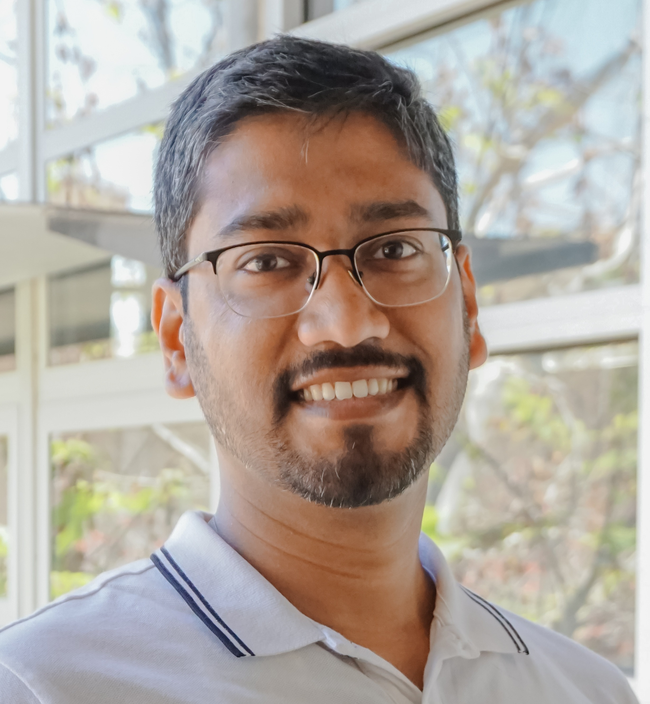

Staff Engineer
Samsung Semiconductor, Inc.
Email: firstname[DOT]r[DOT]lastname[AT]gmail[DOT]com

My primary research interests lie in advanced sensing and inference using multi-sensor systems, sparse signal recovery and communication systems. My work exploits statistical structure present within available data and enforces physical models to provide high-resolution estimation performance.
Theory and Practice of Light-Weight Sequential SBL Algorithm: An Alternative to OMP
Transactions on Signal Processing, 2025